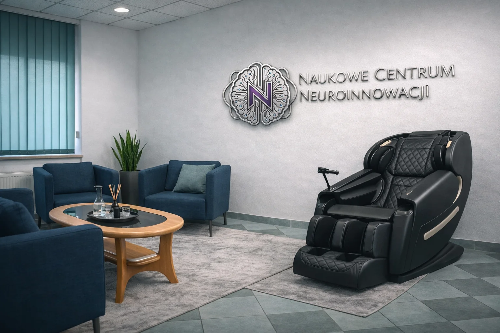
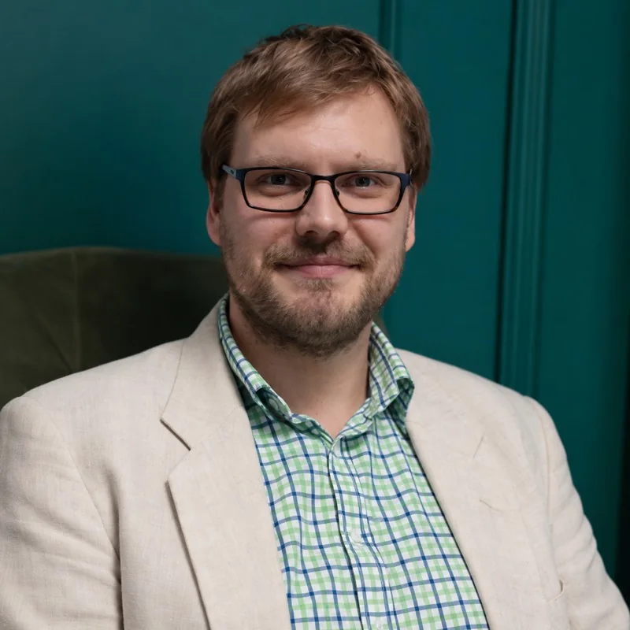
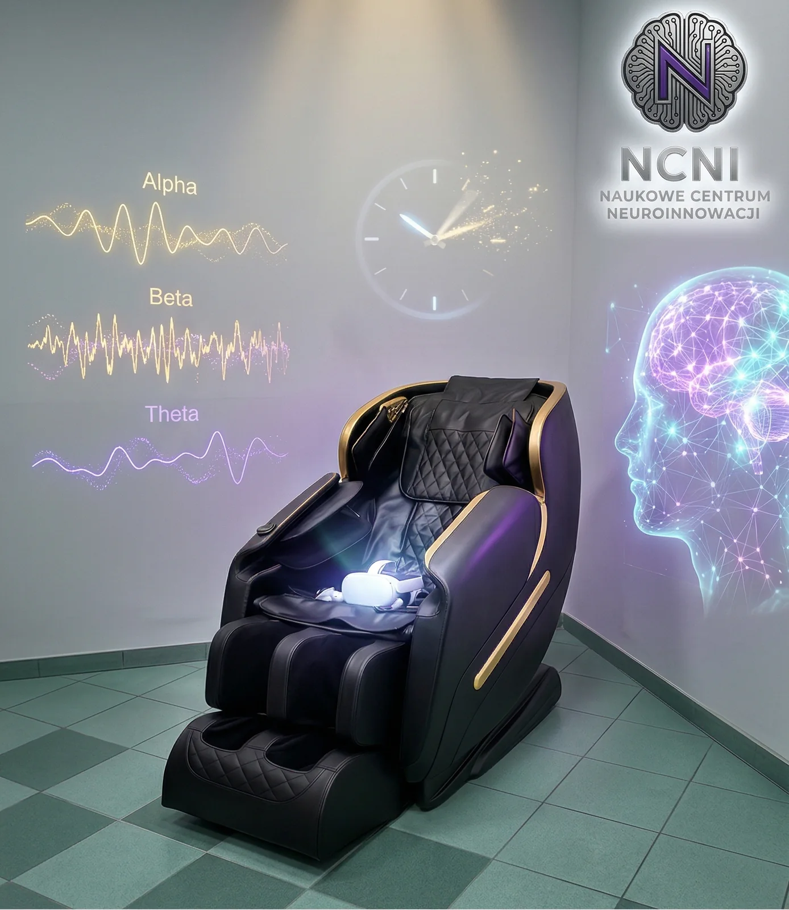

Jest mi trudno.
Nie chcę być z tym sam.
Lęk, przeciążenie, obniżony nastrój lub kryzys życiowy. Konsultacja psychologiczna pozwala przyjrzeć się sytuacji i omówić dalsze wsparcie.
Rozmowa z Darią Konsultacja: 220 zł / 50 minWrocław · spotkania również online
Możesz zacząć od rozmowy. Przyjrzymy się temu, co Cię obciąża, i ustalimy, jakiej pomocy potrzebujesz: w emocjach, relacjach, koncentracji i codziennym funkcjonowaniu.
Psychologia i terapia · ADHD i autyzm · rozmowa z pomiarem

Najpierw człowiek.
Potem metoda.

Daria i SebastianPoznaj osoby, z którymi porozmawiasz ↗Nie trzeba znać nazwy swojej trudności,
żeby poprosić o pomoc.
OD TWOJEJ SYTUACJI DO POMOCY
Zaczynamy od tego, z czym przychodzisz. Formę pracy dobieramy wspólnie, po rozmowie o Twoich potrzebach.
Lęk, przeciążenie, obniżony nastrój lub kryzys życiowy. Konsultacja psychologiczna pozwala przyjrzeć się sytuacji i omówić dalsze wsparcie.
Rozmowa z Darią Konsultacja: 220 zł / 50 minPowracające konflikty, dystans i trudności w komunikacji. Terapia par daje przestrzeń, by przyjrzeć się relacji z pomocą psychoterapeutki.
Poznaj terapię par Spotkanie par: 300 zł / 90 minADHD, autyzm, przeciążenie lub trudności z organizacją dnia. Psychoedukacja pomaga poznawać własne potrzeby i budować codzienne strategie.
Poznaj wsparcie dla siebie Psychoedukacja: 300 zł / do 60 minPrzy migrenie lub dużej wrażliwości na bodźce omawiamy codzienne obciążenia i potrzeby. Możliwe wsparcie obejmuje psychoedukację oraz indywidualnie dobrane sesje regulacji i odpoczynku.
Poznaj wsparcie przy migrenie Konsultacja: 350 zł · NeuroMigra, plan i pierwsza wizyta: 450 złJeśli podejrzewasz ADHD lub autyzm, pomożemy omówić dalszą ścieżkę diagnostyczną w NCNI. Po diagnozie możesz skorzystać z pomocy psychologicznej i psychoedukacji.
Poznaj ścieżkę diagnostyczną Zakres badań i całkowity koszt potwierdzamy przed rezerwacją.Przyglądamy się trudnościom z uwagą, napięciu i temu, jak funkcjonujesz na co dzień. Gdy odpowiada to celowi pracy, rozmowę uzupełniamy pomiarem, biofeedbackiem lub sesją VR.
Zobacz rozmowę z pomiarem Rozmowa z pomiarem: 450 zł · sesje wspierające: 350 złPająki, owady, wysokość lub sytuacje, których coraz częściej unikasz. Zaczynamy od rozmowy. Jeśli VR odpowiada Twojej trudności, możemy stopniowo pracować z bodźcem w kontrolowanym otoczeniu.
Poznaj pracę z lękiem Zakres dostępnych scenariuszy potwierdzamy na konsultacji.Szukasz wsparcia przy dysleksji, dyskalkulii, tikach, zespole Tourette’a lub dyspraksji? Zapytaj o konsultację ekspercką NCNI ↗. Rodzaj spotkania i dalsze kroki dobieramy do zgłaszanej trudności.
LĘK, FOBIE I UNIKANIE
Gdy lęk zawęża codzienność, warto poszukać pomocy. Nie musisz zaczynać od najtrudniejszej sytuacji.
Omawiamy, co wywołuje lęk i czego przez niego unikasz. Arachnofobia to lęk przed pająkami; podobne trudności mogą dotyczyć owadów, wysokości czy wystąpień.
Ekspozycja oznacza stopniowe oswajanie sytuacji wywołującej lęk. VR pozwala odtworzyć wybrane bodźce i ustalać poziom trudności razem ze specjalistą. Możesz zgłosić potrzebę przerwy.
Celem jest większa swoboda poza gabinetem. Rozmawiamy o reakcjach, obserwujemy postęp i ustalamy kolejne kroki, także te w codziennych sytuacjach.
METODA Z OPARCIEM W BADANIACH
Badania kliniczne potwierdzają skuteczność terapii ekspozycyjnej w VR w wybranych fobiach. To podstawa do doboru metody, a nie obietnica identycznego efektu u każdej osoby. Dobór scenariusza i osoby prowadzącej omawiamy przed rozpoczęciem.
Poznaj przegląd badań nad ekspozycją VR ↗Dowody dotyczą terapii ekspozycyjnej w określonych protokołach. Nie oznaczają potwierdzenia skuteczności każdego filmu VR ani całego połączenia NCNI.System.
MIGRENA I PRZECIĄŻENIE BODŹCAMI
Migrena potrafi zmienić plany, rytm pracy i relacje. W NCNI możesz omówić obciążenia oraz sposób wspierania odpoczynku i regulacji napięcia.
Przyglądamy się wrażliwości na światło i dźwięk, stresowi oraz warunkom odpoczynku. Konsultacja dotycząca migreny i wysokiej wrażliwości: 350 zł.
NeuroMigra obejmuje przygotowanie planu i pierwszą wizytę: 450 zł. Dalszy zakres, częstotliwość oraz koszt ustalamy indywidualnie.
Możliwe wsparcie obejmuje psychoedukację, ćwiczenia oddechowe i biofeedback. VR dobieramy z uwzględnieniem tolerancji bodźców; nie jest obowiązkowym elementem sesji.
Wsparcie NCNI uzupełnia opiekę medyczną przy migrenie. Rozpoznanie i leczenie migreny wymagają konsultacji lekarskiej.
Zapytaj o NeuroMigra ↗GDY ROZMOWĘ WARTO UZUPEŁNIĆ
Rozmowa z pomiarem łączy spotkanie z psychologiem lub ekspertem NCNI z pomiarem HRV albo EEG, dobranym do celu sesji.
Wyniki uzupełniają rozmowę i obserwację specjalisty. Pomagają omówić reakcje organizmu oraz zaplanować dalszą pracę. Po spotkaniu otrzymujesz raport z omówieniem.
Zapytaj o rozmowę z pomiarem ↗JEDNO SPOTKANIE, TRZY ELEMENTY
Twoja sytuacja, potrzeby i cel spotkania.
HRV: zmienność rytmu serca. EEG: zapis aktywności elektrycznej mózgu. Zakres dobieramy indywidualnie.
Raport oraz ustalenie, jaka forma wsparcia odpowiada Twoim potrzebom.
Pomiar uzupełnia spotkanie. Sam nie rozstrzyga diagnozy ADHD, autyzmu ani innych zaburzeń.

NCNI.System · WrocławINNOWACJA, KTÓRĄ MOŻESZ POCZUĆ
Przenieś uwagę z codziennego zgiełku do spokojniejszej przestrzeni. W NCNI.System łączymy otoczenie VR, pomiar HRV i komfort fotela Zero Gravity w indywidualnej sesji prowadzonej przez specjalistę.
To nasze autorskie podejście do pracy z uwagą, napięciem i odpoczynkiem. Zamiast wybierać urządzenie, wybierasz cel spotkania. My dobieramy środowisko, ćwiczenia i sposób pracy.
VR pozwala wejść w wybraną scenerię i ćwiczyć uwagę lub wyciszenie z dala od bodźców gabinetu.
Pomiar HRV uzupełnia obserwację specjalisty. W zależności od celu sesji korzystamy również z EEG i biofeedbacku.
Fotel Zero Gravity zapewnia podparcie i odchyloną pozycję. Intensywność i czas pracy ustalamy z uwzględnieniem Twojej wrażliwości.
Sesja ma charakter wspierający. O doborze metod decydują potrzeby i kwalifikacja do spotkania; nie każdy element musi być użyty podczas każdej sesji.
ZOBACZ, ZANIM PRZYJDZIESZ
Przykładowe środowiska i ćwiczenia NCNI. Film pokazuje aplikację; przebieg spotkania dobieramy do osoby i celu pracy.
Kosmos w VR. Przykładowa sceneria do wyciszenia i pracy z uwagą.
Otwórz film osobno ↗Nie udało się odtworzyć filmu. Możesz otworzyć go osobno.
Trening uważności w VR dla osób z ADHD. Ćwiczenia dobieramy do wieku i potrzeb.
Otwórz film osobno ↗Nie udało się odtworzyć filmu. Możesz otworzyć go osobno.
Przykład środowiska do pracy z lękiem przed pająkami. Trening odbywa się po konsultacji i kwalifikacji.
Otwórz film osobno ↗Nie udało się odtworzyć filmu. Możesz otworzyć go osobno.
Przykład ćwiczeń VR w obszarze trudności matematycznych. To element wsparcia, a nie samodzielna diagnoza.
Otwórz film osobno ↗Nie udało się odtworzyć filmu. Możesz otworzyć go osobno.
BEZ KONIECZNOŚCI WYBIERANIA METODY
Nie musisz od razu decydować o terapii czy serii spotkań. Zacznijmy od ustalenia, czego potrzebujesz.
Zadzwoń lub napisz. Jeśli nie wiesz, którą wizytę wybrać, pomożemy dopasować pierwsze spotkanie.
Na konsultacji jest miejsce na pytania, Twoje oczekiwania i rozmowę o możliwych formach pracy.
Może to być terapia, psychoedukacja, dalsza diagnostyka lub indywidualne sesje wspierające. Zakres i koszty omawiamy przed rozpoczęciem.
DALSZE WSPARCIE, GDY JEST POTRZEBNE
W NCNI korzystamy również z biofeedbacku i sesji VR. Wprowadzamy je, gdy pasują do celu pracy i potrzeb osoby. Sesje mają charakter wspierający; nie zastępują psychoterapii ani leczenia.
POZNAJ NASZ ZESPÓŁ
Daria wnosi perspektywę psychologii i relacji. Sebastian łączy doświadczenie naukowe z pracą nad technologiami wspierającymi codzienne funkcjonowanie. Wspólnym punktem wyjścia są Twoje potrzeby.

PSYCHOLOGIA I PSYCHOTERAPIA
Psycholog, psychoterapeutka
Kiedy trudno postawić granicę, odpocząć bez poczucia winy albo porozumieć się z kimś bliskim, sama rada „odpuść” zwykle nie wystarcza. Z Darią możesz przyjrzeć się temu, co stoi za powracającymi reakcjami.
Łączy pracę psychodynamiczną i integratywną: uwzględnia obecną sytuację oraz wcześniejsze doświadczenia. Wspiera dorosłych i pary, również w kryzysach, przeciążeniu i wypaleniu.
Jej praca obejmuje gabinet i edukację akademicką. Wykłada na Uniwersytecie WSB Merito i jest menedżerką kierunku Psychologia i Informatyka. Interesuje ją wykorzystanie technologii do wspierania zdrowia psychicznego, z uważnością na relację i bezpieczeństwo.
W NCNI możesz spotkać się z nią po polsku lub angielsku, indywidualnie albo jako para. Pierwsza konsultacja pozwala omówić sytuację i możliwą dalszą pracę.
Więcej o Darii na jej stronie ↗Psychoterapia od 2018 roku · regularna superwizja · dorośli i pary
Umów spotkanie z Darią ↗KONSULTACJE EKSPERCKIE I POMIARY
Dr hab. inż., prof. PWr · dyrektor naukowy NCNI
Co pomiar może wnieść do rozmowy o Twoich trudnościach? Kiedy technologia ma sens, a kiedy warto wybrać inną drogę? Z Sebastianem możesz uporządkować te pytania i omówić możliwości NCNI.
Jest profesorem Politechniki Wrocławskiej i dyrektorem naukowym centrum. Łączy biofizykę oraz inżynierię biomedyczną z rozwojem narzędzi cyfrowych. W NCNI pracuje nad zastosowaniem VR, EEG i HRV.
Jego dorobek obejmuje badania nad błonami biologicznymi, modelowanie molekularne i zastosowania sztucznej inteligencji w medycynie. To naukowe zaplecze jego pracy nad technologiami wspierającymi człowieka.
W centrum zajmuje się doborem scenariuszy VR, analizą pomiarów i konsultacjami eksperckimi. Uwzględnia różnice w sposobie funkcjonowania i wrażliwości na bodźce, także u osób z ADHD i w spektrum autyzmu.
Na spotkaniu możesz omówić cel pracy, zakres pomiaru i dalsze kroki. Wiedza o urządzeniu staje się użyteczna wtedy, gdy wiadomo, po co je stosować.
Poznaj dorobek i pełną biografię ↗Konsultacja ekspercka jest odrębną usługą od konsultacji psychologicznej i psychoterapii.
Zapytaj o konsultację z Sebastianem ↗JASNO, PRZED SPOTKANIEM
Ceny wybranych usług zgodne z cennikiem NCNI od 1 października 2026 r. Przed rezerwacją potwierdzamy rodzaj spotkania.
PRZED PIERWSZYM SPOTKANIEM
Napisz lub zadzwoń i krótko opowiedz, czego szukasz. Nie musisz samodzielnie wybierać metody. Przy trudnościach emocjonalnych możesz zacząć od konsultacji psychologicznej. Jeśli interesuje Cię pomiar lub dobór dalszej ścieżki w NCNI, omówimy odpowiedni wariant spotkania.
Nie. Konsultacja jest okazją do poznania sytuacji i omówienia możliwości. Decyzję o dalszych spotkaniach podejmujesz po rozmowie o celu, formie i kosztach pracy.
Konsultacje psychologiczne są dostępne w gabinecie i online, w tej samej cenie. Dostępność pozostałych form spotkań potwierdzamy przy rezerwacji. Sesje z pomiarem i technologiami wymagają obecności w gabinecie.
Nie. HRV lub EEG uzupełniają rozmowę i obserwację. Jeśli potrzebna jest diagnostyka psychologiczna lub konsultacja medyczna, ustalamy ją jako osobny etap.
Nie. Program ma charakter wspierający: obejmuje dobór form regulacji i odpoczynku oraz pracę z codziennymi obciążeniami. Nie zastępuje konsultacji lekarskiej, diagnostyki ani leczenia migreny. Dalszy zakres i koszty ustalamy indywidualnie.
Zgodnie z cennikiem NCNI odwołanie jest bezpłatne do 24 godzin przed spotkaniem. Późniejsze odwołanie wiąże się z opłatą równą cenie wizyty. Szczegóły potwierdzamy przy rezerwacji.
ZACZNIJMY OD KONTAKTU
Umów spotkanie lub zapytaj, od czego zacząć. Możesz wybrać jeden z poniższych kierunków lub po prostu opowiedzieć, czego potrzebujesz. Rejestracja NCNI potwierdzi osobę prowadzącą, termin i cenę.
Pierwsza wiadomość może być krótka. Szczegóły swojej sytuacji możesz omówić na spotkaniu.